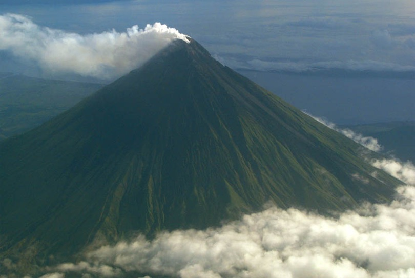
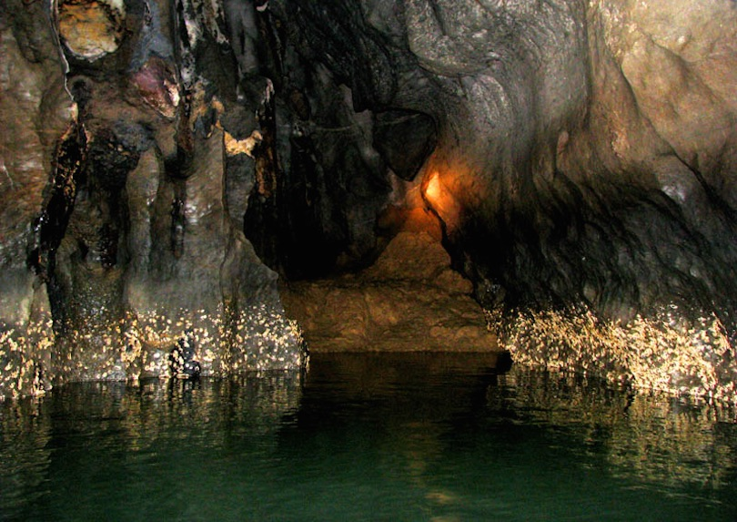

Puerto Princesa Underground River

Chocolate Hills

Calle Crisologo, Vigan

Tubbataha Reef, Palawan

Kawasan Falls, Cebu

Phillipines is one of the best areas to tour when you wanna tour around the world.
The country has so many beautiful places to explore some of them can be mountains, Oceans,
Structures, and more. They have so much cultural places too, and even historical areas to see
Here are atleast 6 areas you should atleast visit!